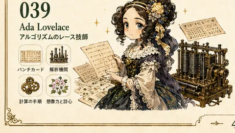
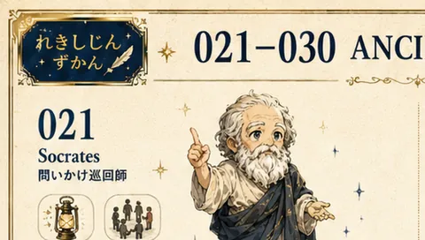
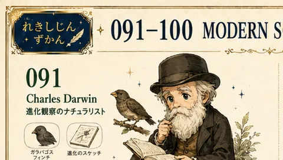

甲 CHARACTER STORYEdition A
研究者たちと歩く、
紙芝居ラボ
七名の案内役が、問い・入力・実験・結果を演じ分けます。同期字幕と実レンダーPV、二百名分の人物図鑑を添えた「ゆっくり理解する」版です。
- 七場面の章立て
- 二百名の人物図鑑
- 音声がなくても字幕で完結
RESEARCH PHANTOM STUDIO · 第一版
論文を、装丁された一冊として読む。
RESEARCH PHANTOM 書房 · 東京
序ResearchPhantom Studio
Preface
毎日届く論文フィードを、読み流さずに一冊の本として組み直しました。 問い・入力・手法・観測・結果・意味という骨格はそのままに、 軽く探すLight、文字とデータ図形で切り込むFull、 キャラクターが場面を演じるExtraの三通りです。どこから入っても、 お気に入りも読了の記録も同じ書架に残ります。
更新範囲：毎日自動で更新するのは論文フィードです。解説の役割分け、音声、完成動画、AIモーションは自動確定せず、原文確認と人のレビューを経て追加します。
i
目次Contents
ii
Two Editions · One Shelf
どちらの版から入っても、同じ論文・同じお気に入り・同じ振り返りの記録へ戻れます。
附録Page Foley · CC0
Real Page Foley
StarNinjas による本の実録音を五テイク収録しました。ランダムは同じ音の連続を避け、任意の選択と音量はこの端末に残ります。
三
図版Historical Cast 001—200
Plates · 001—200
元の図鑑シート二十枚を軽量化して全二百名を収め、うち七名を甲版の動く解説にあてています。
任意の対象をキャラクター化する CAST LABへ

四